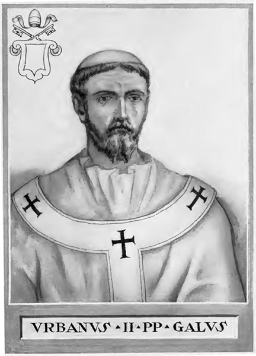
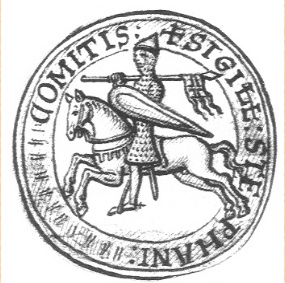
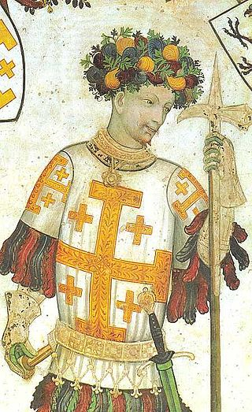
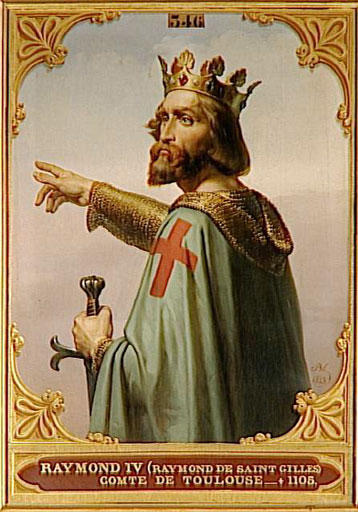

The First Crusade (1095–1099) was the first of a
number of crusades that attempted to recapture the Holy Land,
called for by Pope Urban II at the Council of Clermont in 1095.
Urban called for a military expedition to aid the Byzantine Empire,
which had recently lost most of Anatolia to the Seljuq Turks.
The resulting military expedition of primarily Frankish nobles,
known as the Princes' Crusade, not only re-captured Anatolia but
went on to conquer the Holy Land (the Levant), which had fallen
to Islamic expansion as early as the 7th century, and culminated
in July 1099 in the re-conquest of Jerusalem and the establishment
of the Kingdom of Jerusalem.
   